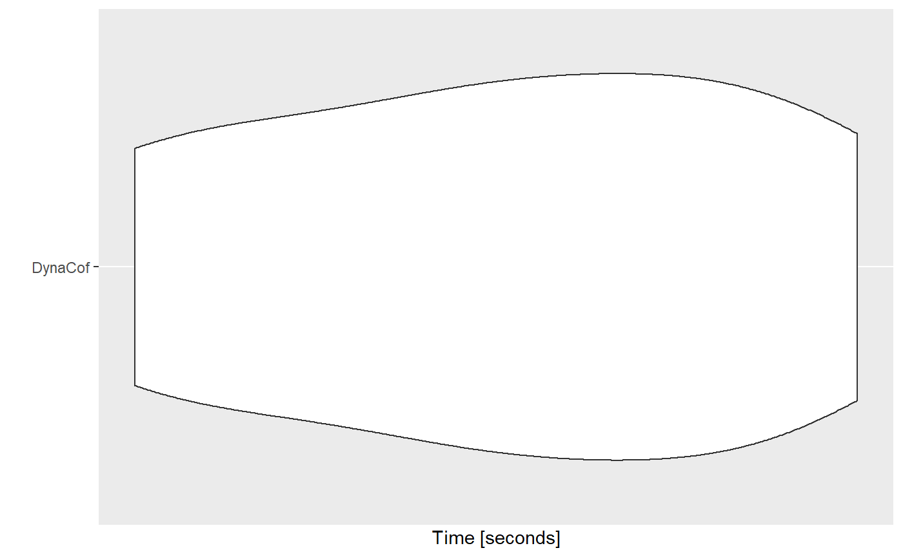
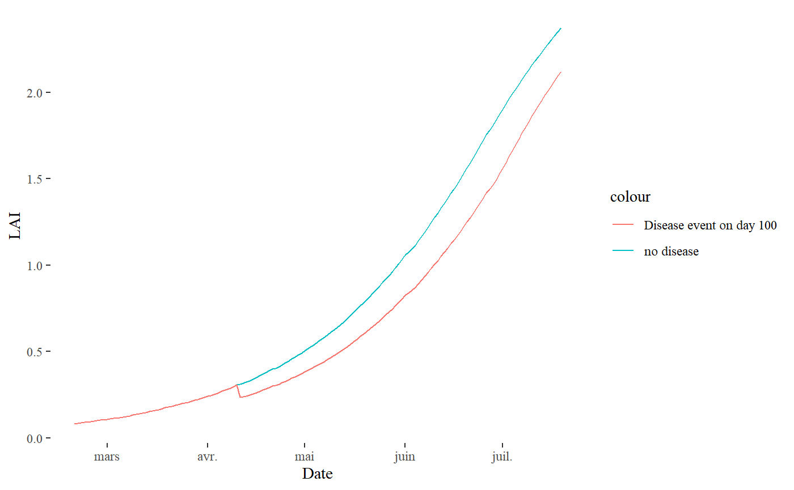

julia-version.RmdDynACof is available as an R package (this one), but also as a Julia package for better performance (more than ~100x). The Julia package is available on this repository, and the documentation is available here.
It is possible to use the Julia version from R with approximately the same command as it is for using the R version. Here we explain the different steps to get there.
The first step is to install Julia on your computer. Follow this link, and install the current stable release (or at least > v1.1). If you don’t know how, just click on “help” after the name of your OS and follow the instructions (e.g. here for windows). After this operation, check that Julia is in your path. To do so, the simplest way is to open a terminal (or a cmd) and to simply type julia. If Julia is starting, then it must be in your path, else please go to the internet to find the way.
Open R (or better, Rstudio), and load the DynACof R package:
Then, setup the Julia environment using dynacof.jl_setup():
dynacof.jl_setup()
#> Julia version 1.1.1 at location C:\Users\vezy\AppData\Local\Julia-1.1.1\bin will be used.
#> Loading setup script for JuliaCall...
#> Finish loading setup script for JuliaCall.
#> Julia + DynACof.jl successfully instantiatedThis command instantiate julia, download the required Julia packages, and precompile them. This step can take a while, especially if you have a slow connection and/or computer. You can expect to wait for 2-3 minutes the first time you execute this function, but next time the packages will be in your computer and precompiled already, so it is less time-consuming after the first time.
When you already ran dynacof.jl_setup() once on your computer, you can add install=FALSE to avoid unecessary computations:
If you have some trouble executing the last step, you can do two things:
dynacof.jl_setup(rebuild=TRUE);To install manually Julia packages, open Julia in a terminal (and not from an IDE like JuliaPro), and copy/paste these lines of code (and press enter):
using Pkg
Pkg.add(["RCall","Suppressor","DynACof"])
#> Resolving package versions...
#> Updating `C:\Users\vezy\.julia\environments\v1.1\Project.toml`
#> [no changes]
#> Updating `C:\Users\vezy\.julia\environments\v1.1\Manifest.toml`
#> [no changes]This command download the packages needed for a simulation. Then, execute this line of code:
It will pre-compile the packages on your computer, and will be much more informative than from R if it fails. If it fails, try to follow the indications (e.g. install other packages using Pkg.add("Name of the package")).
JuliaCall
If the previous step succeeded, R is now talking to Julia using the JuliaCall package. You can check for fun that Julia is working by executing the following command:
If it returns 2, it means that R sent the "1+1" command to Julia, that Julia evaluated it, and returned 2. Now we can ask to Julia to send back the value to R:
Now R has the object b with a value of 2.
We can use the example data to make a simulation. In DynACof.jl, the default parameter values in the model are the ones from Vezy et al. (2019), and we can download the meteorology from Github using these commands:
met_file= tempfile()
download.file("https://raw.githubusercontent.com/VEZY/DynACof.jl_inputs/master/meteorology.txt",met_file)Now the meteorology file from Vezy et al. (2019) is downloaded on a temporary file.
To make a simulation using DynACof.jl, use these commands:
S= dynacof.jl(Inpath= dirname(met_file), FileName=list(Site="package",Meteo=basename(met_file),Soil="package",Coffee="package",Tree=NULL))
#>
#> Simulation completed successfullyThis command is making a simulation using the default parameters from the model, and the meteorology that we just downloaded. We can plot the LAI of the coffee now:
The R version takes usually about 9 or 10 minutes to execute the full example. Let’s see how much time it takes in average to make a simulation with the Julia version (making 10 simulations):
library(microbenchmark)
library(ggplot2)
a= microbenchmark(DynaCof= dynacof.jl(Inpath= dirname(met_file), FileName=list(Site="package",Meteo=basename(met_file),Soil="package",Coffee="package",Tree=NULL)), times= 10)
#>
#> Simulation completed successfully
#>
#>
#> Simulation completed successfully
#>
#>
#> Simulation completed successfully
#>
#>
#> Simulation completed successfully
#>
#>
#> Simulation completed successfully
#>
#>
#> Simulation completed successfully
#>
#>
#> Simulation completed successfully
#>
#>
#> Simulation completed successfully
#>
#>
#> Simulation completed successfully
#>
#>
#> Simulation completed successfully
autoplot(a)
#> Coordinate system already present. Adding new coordinate system, which will replace the existing one.
Incredible! It makes a simulation in less than 5 seconds in average! It is more than 100x faster than the pure R version.
By default DynACof starts a simulation from seedlings, but sometimes it is usefull to intialize a simulation at a given state. To do so, we can use the function dynacof_i.jl(). This function takes a pre-initialized simulation in input, and make a simulation for given days only.
Given the large number of variables to initialize, the simplest way to initialize a simulation is to make a dummy one with the same parameters and meteorology than desired. For that matter, let’s use our previous simulation output: S (see “Calling DynACof”).
Let’s say that the first 99 days of simulation correspond to what we needed, but that we want to simulate an event of disease on day 100 by reducing the LAI. What we can do is to take the previous simulation S, remove some leaf mass (CM_Leaf) on day 100, and re-do the computation for one day:
The LAI is equal to 13.1637482. Let’s reduce it by 25%:
Now the leaf C mass is equal to 9.8728111. But all other variables are impacted by this one on the next day because it is used to compute the LAI that helps compute many things afterwards (light interception, then GPP…) !
Before running the new simulation, the LAI on day 101 is equal to 0.3118927 and CM_Leaf is equal to: 13.3427444.
Let’s see what is the impact of this disease on the coffee plant by re-simulating the day 101:
Well now here are the results:
If we want to see the impact of the disease on this day, we can put the results in a new object and plot the results against the first simulation outputs:
S= dynacof.jl(Inpath= dirname(met_file),FileName=list(Site="package",Meteo=basename(met_file),Soil="package",Coffee="package",Tree=NULL))
#>
#> Simulation completed successfully
S_disease= S
S_disease$Sim$CM_Leaf[100]= S_disease$Sim$CM_Leaf[100] * (1.0 - 0.25)
S_disease= dynacof_i.jl(i = 101:200, S = S_disease)
bind_cols(Date= S$Meteo$Date,LAI= S$Sim$LAI,LAI_disease= S_disease$Sim$LAI)%>%
slice(50:200)%>%
ggplot(aes(y= LAI, x= Date))+
geom_line(aes(color= "no disease"))+
geom_line(aes(y= LAI_disease,color= "Disease event on day 100"))+
theme_tufte()
The coffee with the disease is plotted in red, while the other is plotted in black. The result is quite obvious: the disease impacted the LAI of the coffee by decreasing its value rapidly on day 101, and then the coffee grew again but its LAI remained lower than the other.